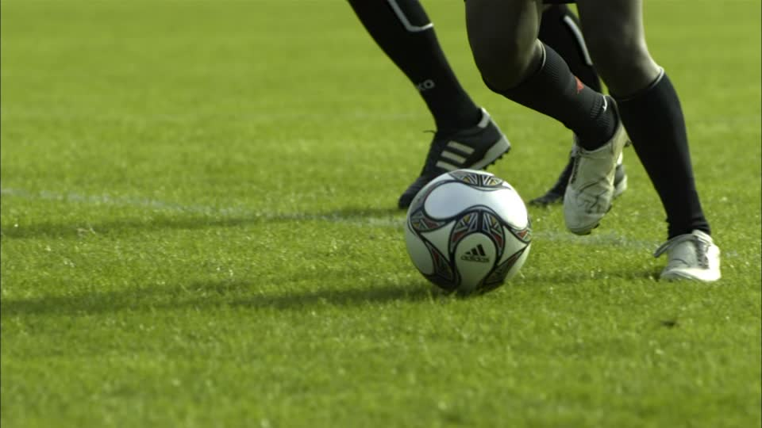

Los Deportes
El deporte es la práctica de un ejercicio físico regulado y competitivo. El deporte puede ser recreativo, profesional o como una forma de mejorar la salud.
Tipos de deportes
Aquí, hablaremos sobre 3 tipos de deportes los cuales son:
- Fútbol
- Béisbol
- Baloncesto
Fútbol
El fútbol es un deporte colectivo donde dos equipos se enfrentan y tratan de introducir un balón en la meta del equipo rival.Para ello, los jugadores se sirven de cualquier parte del cuerpo, menos los brazos y manos. El enfrentamiento entre equipos, llamado partido, tiene lugar en una cancha de césped de grandes dimensiones. Para mas información, haz click aquí Click
Béisbol
El béisbol es un deporte fundado en EE.UU. que se llama «el pasatiempo de América». Este deporte se creó alrededor de la década de 1840 y ha existido desde entonces. Se juega con dos equipos de nueve jugadores que se turnan para batear y lanzar. Para más información, click aquí
Baloncesto
El baloncesto, basquetbol o básquetbol (castellanización de basketball, en inglés) es un deporte en equipo, en el que dos bandos de jugadores se enfrentan y tienen como objetivo hacer entrar un balón en el aro del equipo contrario. Gana el juego el equipo que más anotaciones o “canastas” haga. Para mas información, vea este video